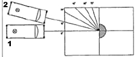
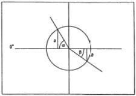

| Objetivo: |
Determinar el índice de refracción del vidrio.
|
|
| Introducción: |
|
Vea introducción práctica 43.
El índice de refracción
(también llamado índice refractivo) es siempre mayor que la unidad. El índice de refracción de la mayor parte
de los vidrios comunes utilizados en instrumentos ópticos se encuentra entre 1.46 y 1.96. Existen muy pocas
sustancias cuyos índices sean superiores a 1.96; el diamante es una de ellas,
con un índice de refracción de 2.42.
|
|
|
| Desarrollo Experimental: |
Atención:
Cuida que el haz de luz de la caja luminosa incida sobre el cuerpo óptico (Figura 1) exactamente en el punto donde se cortan las
rectas (“pie de la normal”), y que el cuerpo óptico no varíe su posición al mover la caja.
Montaje
- Coloca la hoja de papel transversalmente delante de ti sobre la mesa y prepárala como se indica en la Figura 4. El ángulo de intersección de ambas rectas debe ser exactamente 90º. Traza desde el punto de intersección de las rectas ángulos de 15°, 30°, 45° 60° y 75°
(Figura 1).
- Coloca el cuerpo óptico semicircular con la cara plana exactamente en la vertical de las perpendiculares, la más corta. La
superficie mate sobre el papel.
- Coloca el diafragma de una rendija en la caja luminosa, sobre la parte de la lente, y ponla a unos 10 cm. frente a la cara plana del cuerpo óptico (figura 1).
Experimento 1:
Conecta la caja luminosa a la fuente de alimentación (12V).
Desplaza la caja (Figura 4: 1-ajuste) hasta que el haz de luz estrecho transcurra exactamente sobre el eje óptico (línea 0°, normal al plano de incidencia).
Desplaza el cuerpo óptico semicircular con cuidado hasta que el haz de luz estrecho continúe discurriendo sobre el eje óptico
después de su paso a través del vidrio; marca cuidadosamente, con una línea fina a lápiz, el contorno del cuerpo óptico.
Desplaza la caja luminosa con cuidado (Figura 1 : 2 - primera posición) hasta que el haz de luz incida sobre el cuerpo óptico bajo un ángulo de 15° (a lo largo de una de las líneas auxiliares trazadas anteriormente).
Observa la trayectoria del haz de luz refractado; compara el ángulo de incidencia a con el ángulo entre el haz de luz refractado y la normal al plano de incidencia (ángulo de refracción ß).
¿Qué puedes comprobar? Anota lo que observas.
Marca con dos cruces la trayectoria del haz de luz refractado, y para simplificar el estudio posterior, con una cruz el haz de luz
incidente.
Repite este procedimiento con los otros ángulos de incidencia a dados. Marca, siempre dos veces, la trayectoria del haz de luz
refractado y una vez el haz de luz incidente (utilizando marcas o colores distintos).
Desconecta la fuente de alimentación y quita la caja luminosa y el cuerpo óptico del papel.
Une las marcas que se corresponden, entre sí y con el punto de intersección de las rectas (pie de la normal), de modo que se haga visible la trayectoria de cada uno de los haces antes y después de su refracción en el cuerpo óptico.
Mide los ángulos de refracción ß y anota su valor en la Tabla 1, junto al ángulo de incidencia a� correspondiente.
|
| Resultados y Conclusiones: |
|
1) Comparación del ángulo de incidencia a y el ángulo de refracción ß.
Con los resultados obtenidos:
1) Compara el ángulo de incidencia a con el ángulo de refracción correspondiente ß.
¿Qué conclusión puedes sacar? Formula un enunciado.
2) Traza un círculo de radio 5 cm. y centro en el punto de intersección de los ejes. Mide las semicuerdas a y b (Figura 2) correspondientes a los ángulos de incidencia a y de refracción ß. Anota los valores a la Tabla 1.
3) Calcula el cociente n = a/b (índice de refracción) de todos los ángulos a, y anota los valores en la Tabla 1. Compara los distintos valores de n entre sí. ¿A qué conclusión llegas?
4) Calcula el valor medio de n.
5) Piensa cuáles son los errores de medición que influyen sobre el resultado del índice de refracción n.
Ejercicio complementario
En la Tabla 2 se da el índice de refracción de diversas clases de vidrio; compara con el valor que has obtenido de n.
Piensa qué enunciado es posible, conociendo del índice de refracción, sobre la refracción de la luz al pasar de aire a vidrio.
|
|
|
Figura 1:
1 –Ajuste, 2 –Primera Posición |
|  |
| |
Figura 2
|
|  |
|